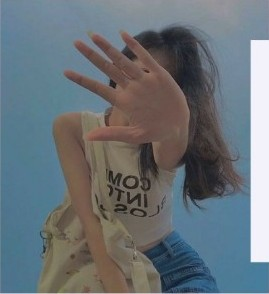

¡Hola!
Bienvenidos a mi espacio creativo
Un lugar donde la creatividad, la inspiración y la fe se unen en cada diseño.
Aquí podrás conocer un poco más sobre mí, mis intereses y mis metas.
¡Gracias por visitarme!
Sobre mí.
Soy Babi Merlo, una persona que se caracteriza por su entusiasmo, creatividad y deseo de superación.
Me inspira crear contenido cristiano, compartir mensajes positivos y transmitir fe a través de cada creación.
Este espacio refleja mi creatividad, dedicación y amor por los pequeños detalles.

Mis habilidades
Cada persona tiene capacidades que la hacen especial. Estas son algunas de las cualidades y habilidades que me representan:
Responsabilidad y compromiso
Creatividad e imaginación
Deseos constantes de superación
Facilidad para aprender
Buena comunicación
Adaptabilidad ante nuevos desafíos
Mis fortalezas
La perseverancia, la dedicación y las ganas de dar siempre lo mejor de mí.
Mis proyectos
Una muestra de mi creatividad, ideas y diseños.
Diseño 1
Una creación llena de creatividad.
Diseño 2
Ideas convertidas en diseño.
Diseño 3
Un proyecto hecho con dedicación.